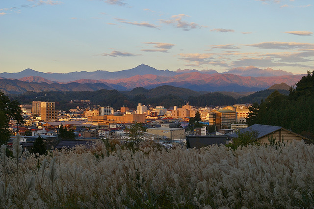
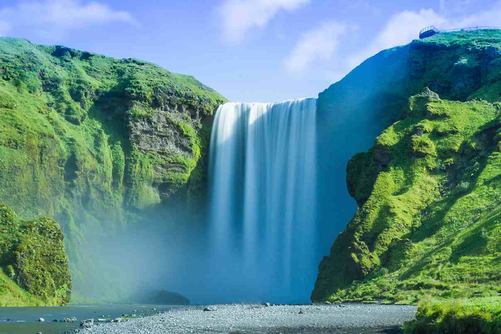

You'll enjoy Takayama, Japan: Gateway to the Japanese Alps.
 Find out more about TakayamaPack your bags for Tokyo.
Quite possibly the largest metropolis in the world, Tokyo has a little bit of something for everyone. With Mt. Fuji nearby, it's easy to get away to an onsen hot spring or a getaway into the mountains once the city wears you out.
Fly to Tokyo
Live it up in Rio de Janeiro, Brazil.
Find out more about RioWe think you'd like Iceland.
A land of waterfalls and otherworldly landscapes, with kind people and modern cities. Try an Icelandair Stopover if you're on your way to Europe.
 Head off to ReykjavikA beach resort in Thailand sounds just about right.
From beautiful modern villas to traditional thatched beachside huts, Thailand has got modern amenities and historical roots. Something for every traveler.
 Check out Thai resorts on Airbnb
Check out Thai resorts on Airbnb
Nice try, but you really should leave the country.
America is a beautiful country, full of lovely places, but we want to encourage you to expand horizons and find a new destination outside of your comfort zone.
Read up on some amazing destinations below! Hopefully you'll be inspired to travel.

.jpg)
We don't have a destination for you just yet. But we should be able to finish coding out the rest of the options for you really soon! Stay with us.